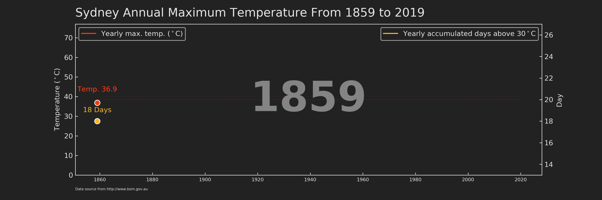
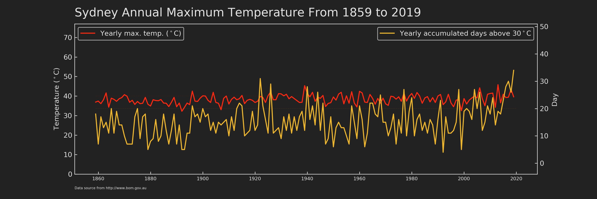
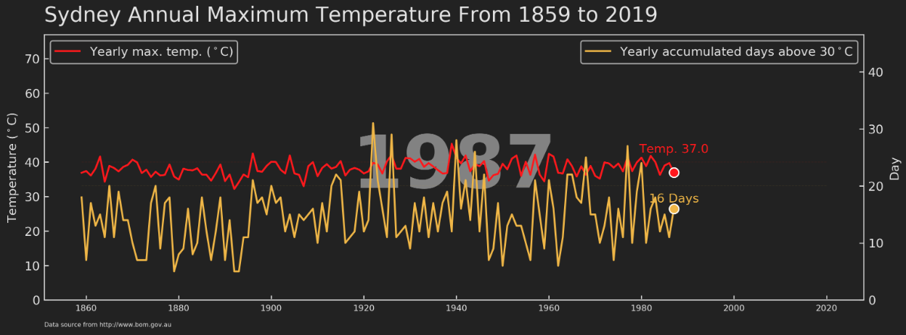

I believe one of the main current events you have read about must be the Australian Bushfire Crisis. The devastating disaster has affected more than 10 million hectares of land, which is compatible to the land area of Portugal, and an estimated 1 billion wild mammals, birds and reptiles have been killed (Source here). Increasing evidence has shown the links between climate change/global warming and this year’s bushfire, such as extreme temperature (1.5ºC above average) and prolonged drought (Source here). Reading these numbers in isolation, you may not see how climate change has evolved over time. From a perspective of data visualisation, instead of using a single value to describe the changing scale, it may be more appealing and informative to use a time series graph, which can show the dynamic trend of a variable along a large scale of time period. I, therefore, took this chance to practice ax.xxx() method in matplotlib using Sydney’s long-term temperature data. If you want to know what is ax.xxx() method in matplotlib, please take a look at my last post. It will help you to understand this post and further to learn matplotlib.
In this post, I will show you how I made the animated time series graph (as shown at the beginning of this post) of annual maximum temperature across a 160-year period in Sydney. Before we dive into the code, here are some takeaways from this plot:
 As a standalone figure (Figure 1), it should contain at least three parts, i.e. title, plot, and footnote. It’s easy to understand the first two parts. As for the footnote, it is usually used to indicate the data source of this figure and special notes.
The plot is no doubt the most important part of the whole figure. In this case, I used two different y-axes to show temperature and day individually and they shared the same x-axis, which is year. matplotlib provides an easy way to create twin axes: ax.twinx()/ax.twiny(). Specifically, ax.twinx() creates a new axes that shares the x-axis with ax, but can have a different y-axis. Likewise, ax.twiny() returns an axes sharing the y-axis, but with a different x-axis. After constructing the figure framework, I set up a futuristic colour theme, which inspired from Tron Legancy. In matplotlib, we can easily configure the figure style via plt.rc(). rc stands for Configure file that automatically Run at startup.
# set up plot style as tron legancy
from matplotlib import cycler
colors = cycler('color',
['#fc280f', '#5fdcff', '#f4ba26', '#85c54c', '#c6d7e0']) # colors for artists will be cycled from this list by default
plt.rc('figure', facecolor='#222222') # facecolor is background colour
plt.rc('axes', facecolor='#222222', edgecolor='#222222',
axisbelow=True, grid=True, prop_cycle=colors) # "axisbelow" set axis ticks and gridlines are below all artists
plt.rc('grid', color='#e3e3e3', linestyle='solid')
plt.rc('xtick', direction='in', color='#e3e3e3')
plt.rc('ytick', direction='in', color='#e3e3e3')
plt.rc('patch', edgecolor='#e3e3e3')
plt.rc('lines', linewidth=1.5)Let’s take a look at the lite function for creating an animated plot in matplotlib.
animation.FuncAnimation(fig, func, frames=None)Essentially, animated fig is just a collection of static axes obtained by func with different values (frames). It very much just like the flipbook animation. In my case, there are in total 160 frames of axes (from year 1859 to 2019, i.e. range(1859, 2020, 1)). With this sorted out, I then created a function that could be applied generally to different year values.
def draw_linechart(Num_Year):
'''
This is the function to make a plot
'''
# since many figures will be generated for animation, old axes need to be cleared before drawing new axes
ax.clear()
ax2.clear()
# select data till the indicated year
df_tmp=df_sydney.loc[df_sydney['Year'] <= Num_Year]
# The frame of the whole figure, use the full data
# excluding from the automatic legend element selection by
# defining a label starting with an underscore.
ax.plot(df_sydney.Year, df_sydney.max_tmp_year*0, label='_1', color='#222222', zorder=1)
# The horizontal line to indicate 40 degree, use the full data
ax.plot(df_sydney.Year, (df_sydney.max_tmp_year**0)*40, label='_1', color='#fc280f', linestyle='dashed', alpha=0.1, linewidth=0.5, zorder=1)
# The horizontal line to indicate 20 days, use the full data
ax2.plot(df_sydney.Year, (df_sydney.hot_day**0)*20, label='_2', color='#eeb72b', linestyle='dashed', alpha=0.1, linewidth=0.5, zorder=1)
# line plot
ax.plot(df_tmp.Year, df_tmp.max_tmp_year, label='Yearly max. temp. ($^\circ$C)',
color='#fc280f', zorder=3)
ax2.plot(df_tmp.Year, df_tmp.hot_day, label='Yearly accumulated days above 30$^\circ$C',
color='#eeb72b', zorder=3)
# dot at the end of the line
ax.scatter(df_tmp.Year.values[-1], df_tmp.max_tmp_year.values[-1], color='#fc280f', s=60, edgecolor ='w', linewidth=1, zorder=4)
ax2.scatter(df_tmp.Year.values[-1], df_tmp.hot_day.values[-1], color='#eeb72b', s=60, edgecolor ='w', linewidth=1, zorder=4)
# text associated with the dot in the figure
ax.text(df_tmp.Year.values[-1], df_tmp.max_tmp_year.values[-1]+5,
s='Temp. {}'.format(df_tmp.max_tmp_year.values[-1]), size=10,
color='#fc280f', ha='center', va='bottom', zorder=5)
ax2.text(df_tmp.Year.values[-1], df_tmp.hot_day.values[-1]+0.7,
s='{} Days'.format(int(df_tmp.hot_day.values[-1])), size=10,
color='#eeb72b', ha='center', va='bottom', zorder=5)
# display year in the background
ax.text(0.5, 0.5, s=df_tmp.Year.values[-1], fontweight='bold', size=60,
color='#e3e3e3', ha='center', va="center",
alpha=0.5, transform=ax.transAxes, zorder=2)
# legend for red line
l1 = ax.legend(loc='upper left')
for text in l1.get_texts():
text.set_color('#e3e3e3')
# legend for yellow line
l2 = ax2.legend(loc='upper right')
for text in l2.get_texts():
text.set_color('#e3e3e3')
# set the y-axis to have enough space for other elements, such as legends
ax.set_ylim(0, df_sydney.max_tmp_year.max()*1.68)
# do not show the grid in the background
ax.grid(b=None)
ax.set_ylabel('Temperature ($^\circ$C)', color='#e3e3e3')
ax2.grid(b=None) # Don't show grid of ax2
ax2.set_ylim(df_tmp.hot_day.min()-5, df_tmp.hot_day.max()*1.5)
ax2.set_ylabel('Day', color='#e3e3e3')
# set color for axes frame
ax2.spines['bottom'].set_color('#e3e3e3')
ax2.spines['right'].set_color('#e3e3e3')
ax2.spines['left'].set_color('#e3e3e3')
ax2.spines['top'].set_color('#e3e3e3')
# Retrieve an element of a plot and set properties
for tick in ax.xaxis.get_ticklabels():
tick.set_fontsize('x-small')
ax.margins(x=0.05)
ax.text(0.00, 1.05, 'Sydney Annual Maximum Temperature From 1859 to 2019', color='#e3e3e3',
transform=ax.transAxes, size=17, weight='light', ha='left')
ax.text(0.00, -0.1, 'Data source from http://www.bom.gov.au', color='#e3e3e3',
transform=ax.transAxes, size=5, weight='light', ha='left')The principle of this function is to draw elements layer by layer (or I may say it is the principle in matplotlib plotting). Let me explain the above function section by section.
ax.clear() and ax2.clear(), the previous axes should be erased before plotting a new one, otherwise, old content in axes will be still left on the fig and recorded in the animation. This is also why I did not include fig, ax = plt.subplots(figsize=(12,4), dpi=300) and ax2 = ax.twinx() in the function body, but called them separately before animation.FuncAnimation(). The plotting space (i.e. fig, ax, and ax2) only need to be set once, just like a reusable whiteboard.df_tmp=df_sydney.loc[df_sydney[‘Year’] <= Num_Year], the input for plotting should be data. The new axes should contain data of current year and all its previous year (i.e. <=). Therefore, when animation.FuncAnimation call the draw_linechart using Num_Year in any given year, the lines in the static figure should span from the beginning (i.e. year 1859) to the called year (Figure 2).
ax.plot(df_sydney.Year, df_sydney.max_tmp_year*0, label=’_1', color=’#222222', zorder=1), this is the first line plot. Notice that the data used here is not df_tmp but full dataframe df_sydney. This section is to create a frame spanned from the beginning year (1859) to the end year (2020) for each axes of df_tmp. This ensures the x-axis of each axes has the same year range (i.e. 1860–2020) instead of changing along with the year range of df_tmp (i.e. 1860-Num_Year). In addition, I only need the frame and the line should be hid for this layer so that I timed 0 for each value (df_sydney.max_tmp_year) in y-axis. You may notice that the value assigned to label contains an underscore, this is to exclude this layer from being displayed by the automatic legend element selection later (ax.legend()). Another argument used here is zorder, which can be considered as the layer sequence along z-axis and 1 means the bottom layer.
From ax.plot() to ax2.plot(), these add two horizontal lines to make it easy for audience to estimate the value of maximum temperature and accumulated days each year.
From ax.plot() to ax.text() this is the part for drawing most elements (lines, head dot, text running with head dot) in the fig. It is very straightforward to understand. The only thing I want to highlight again here is the power of ax.xxx(), which made the manipulations of each axes easy enough.
After setting up the draw_linechart function, let’s draw a static graph by input a specific year. If everything goes right, you will see Figure 2.
# run one frame to test the function
fig, ax = plt.subplots(figsize=(12,4), dpi=300)
ax2 = ax.twinx()
draw_linechart(1987)Running the following code will generate all frames and assign them to the object animator. Then this object can be saved as whatever format you want by animator.save(). My personal preference is to save as mp4. The last note is that fig background colour should be specified using savefig_kwargs={‘facecolor’:’#222222'}, otherwise it will be saved as white which is not consistent with the Tron legancy theme.
import matplotlib.animation as animation
fig, ax = plt.subplots(figsize=(12,4), dpi=300)
ax2 = ax.twinx()
animator = animation.FuncAnimation(fig, draw_linechart,
frames=np.arange(df_sydney.Year.values.min(),df_sydney.Year.values.max(),1), interval=300)
animator.save('./animation5.mp4', savefig_kwargs={'facecolor':'#222222'})Here, I demonstrated, from design to code, how to create an animated graph using matplotlib, which helped us to better understand the temperature change across 160 years in Sydney. You can download the data, animation, graphs, and jupyter notebook from my Github.
As always, I welcome feedback, constructive criticism, and hearing about your data science projects. I can be reached on Linkedin, and now on my website as well.